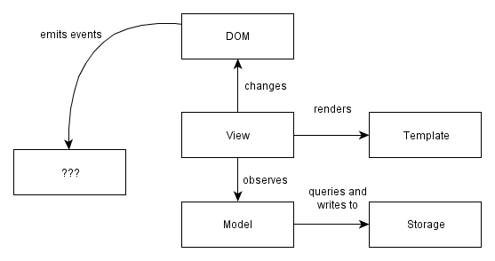

Why do we want to write single page apps? The main reason is that they allow us to offer a more-native-app-like experience to the user.
This would be hard to do with other approaches. Supporting rich interactions with multiple components on a page means that those components have many more intermediate states (e.g. menu open, menu item X selected, menu item Y selected, menu item clicked). Server-side rendering would be hard to implement for all the intermediate states - small view states do not map well to URLs.
Single page apps are distinguished by their ability to redraw any part of the UI without requiring a server roundtrip to retrieve HTML. This is achieved by separating the data from the presentation of data by having a model layer that handles data and a view layer that reads from the models.
Most projects start with high ambitions, and an imperfect understanding of the problem at hand. Our implementations tend to outpace our understanding. It is possible to write code without understanding the problem fully; that code is just more complex than it needs to be because of our lack of understanding.
Good code comes from solving the same problem multiple times; or refactoring. Usually, this proceeds by noticing recurring patterns and replacing them with a mechanism that does the same thing in a consistent way - replacing a lot of "case-specific" code, which in fact was just there because we didn't see that a simpler mechanism could achieve the same thing.
The architectures used in single page apps represent the result of this process: where you would do things in an ad-hoc way using jQuery, you now write code that takes advantage of standard mechanisms (e.g. for UI updates etc.).
Programmers are obsessed with ease rather than simplicity (thank you Rich Hickey for making this point); or, what the experience of programming is instead of what the resulting program is like. This leads to useless conversations about semicolons and whether we need a preprocessor that eliminates curly braces. We still talk about programming as if typing in the code was the hard part. It's not - the hard part is maintaining the code.
To write maintainable code, we need to keep things simple. This is a constant struggle; it is easy to add complexity (intertwinedness/dependencies) in order to solve a worthless problem; and it is easy to solve a problem in a way that doesn't reduce complexity. Namespaces are an example of the latter.
With that in mind, let's look at how a modern web app is structured; and look at three different perspectives:
Modern single page apps are generally structured as follows:
More specifically:
Write-only DOM. No state / data is read from the DOM. The application outputs HTML and operations on elements, but nothing is ever read from the DOM. Storing state in the DOM gets hard to manage very quickly: it is much better to have one place where the data lives and to render the UI from the data, particularly when the same data has to be shown in multiple places in the UI.
Models as the single source of truth. Instead of storing data in the DOM or in random objects, there is a set of in-memory models which represent all of the state/data in the application.
Views observe model changes. We want the views to reflect the content of the models. When multiple views depend on a single model (e.g. when a model changes, redraw these views), we don't want to manually keep track of each dependent view. Instead of manually tracking things, there is a change event system through which views receive change notifications from models and handle redrawing themselves.
Decoupled modules that expose small external surfaces. Instead of making things global, we should try to create small subsystems that are not interdependent. Dependencies make code hard to set up for testing. Small external surfaces make refactoring internals easy, since most things can changes as long as the external interface remains the same.
Minimizing DOM dependent-code. Why? Any code that depends on the DOM needs to be tested for cross-browser compatibility. By writing code in a way that isolates those nasty parts, a much more limited surface area needs to be tested for cross-browser compatibility. Cross-browser incompatibilities are a lot more manageable this way. Incompatibilities are in the DOM implementations, not in the Javascript implementations, so it makes sense to minimize and isolate DOM -dependent code.
There is a reason why I didn't use the word "Controller" in the diagram further above. I don't like that word, so you won't see it used much in this book. My reason is simple: it is just a placeholder that we've carried into the single page app world from having written too many "MVC" server-side apps.
Most current single page application frameworks still use the term "Controller", but I find that it has no meaning beyond "put glue code here". As seen in a presentation:
"Controllers deal with adding and responding to DOM events, rendering templates and keeping views and models in sync".
WAT? Maybe we should look at those problems separately?
Single page apps need a better word, because they have more complex state transitions than a server-side app:
These are all things that need to be glued together somehow, and the word "Controller" is sadly deficient in describing the coordinator for all these things.
We clearly need a model to hold data and a view to deal with UI changes, but the glue layer consists of several independent problems. Knowing that a framework has a controller tells you nothing about how it solves those problems, so I hope to encourage people to use more specific terms.
That's why this book doesn't have a chapter on controllers; however, I do tackle each of those problems as I go through the view layer and the model layer. The solutions used each have their own terms, such as event bindings, change events, initializers and so on.
Asset packaging is where you take your JS application code and create one or more files (packages) that can be loaded by the browser via script tags.
Nobody seems to emphasize how crucial it is to get this right! Asset packaging is not about speeding up your loading time - it is about making your application modular and making sure that it does not devolve into a untestable mess. Yet people think it is about performance and hence optional.
If there is one part that influences how testable and how refactorable your code is, it is how well you split your code into modules and enforce a modular structure. And that's what "asset packaging" is about: dividing things into modules and making sure that the run-time state does not devolve into a mess. Compare the approaches below:
Messy and random (no modules)
|
Packages and modules (modular)
|
The default ("throw each JS file into the global namespace and hope that the result works") is terrible, because it makes unit testing - and by extension, refactoring - hard. This is because bad modularization leads to dependencies on global state and global names which make setting up tests hard.
In addition, implicit dependencies make it very hard to know which modules depend whatever code you are refactoring; you basically rely on other people following good practice (don't depend on things I consider internal details) consistently. Explicit dependencies enforce a public interface, which means that refactoring becomes much less of a pain since others can only depend on what you expose. It also encourages thinking about the public interface more. The details of how to do this are in the chapters on maintainability and modularity.
The third way to look at a modern single page application is to look at its run-time state. Run time state refers to what the app looks like when it is running in your browser - things like what variables contain what information and what steps are involved in moving from one activity (e.g. page) to another.
There are three interesting relationships here:
URL < - > state Single page applications have a schizophrenic relationship with URLs. On the one hand, single page apps exist so that the users can have richer interactions with the application. Richer activities mean that there is more view state than can reasonably fit inside a URL. On the other hand, we'd also like to be able to bookmark a URL and jump back to the same activity.
In order to support bookmarks, we probably need to reduce the level of detail that we support in URLs somewhat. If each page has one primary activity (which is represented in some level of detail in the URL), then each page can be restored from a bookmark to a sufficient degree. The secondary activities (like say, a chat within a webmail application) get reset to the default state on reload, since storing them in a bookmarkable URL is pointless.
Definition < - > initialization Some people still mix these two together, which is a bad idea. Reusable components should be defined without actually being instantiated/activated, because that allows for reuse and for testing. But once we do that, how do we actually perform the initialization/instantiation of various app states?
I think there are three general approaches: one is to have a small function for each module that takes some inputs (e.g. IDs) and instantiates the appropriate views and objects. The other is to have a a global bootstrap file followed by a router that loads the correct state from among the global states. The last one is to wrap everything in sugar that makes instantiation order invisible.
I like the first one; the second one is mostly seen in apps that have organically grown to a point where things start being entangled; the third one is seen in some frameworks, particularly with regards to the view layer.
The reason I like the first one is that I consider state (e.g. instances of objects and variables) to be disgusting and worth isolating in one file (per subsystem - state should be local, not global, but more on that later). Pure data is simple, so are definitions. It is when we have a lot interdependent and/or hard-to-see state that things become complicated; hard to reason about and generally unpleasant.
The other benefit of the first approach is that it doesn't require loading the full application on each page reload. Since each activity is initializable on its own, you can test a single part of the app without loading the full app. Similarly, you have more flexibility in preloading the rest of the app after the initial view is active (vs. at the beginning); this also means that the initial loading time won't increase proportionately to the number of modules your app has.
HTML elements < - > view objects and HTML events < - > view changes
Finally, there is the question of how much visibility we can gain into the run time state of the framework we are using. I haven't seen frameworks address this explicitly (though of course there are tricks): when I am running my application, how can I tell what's going on by selecting a particular HTML element? And when I look at a particular HTML element, how can I tell what will happen when I click it or perform some other action?
Simpler implementations generally fare better, since the distance from a HTML element/event to your view object / event handler is much shorter. I am hoping that frameworks will pay more attention to surfacing this information.
So, here we have it: three perspectives - one from the point of view of the architect, one from the view of the filesystem, and finally one from the perspective of the browser.